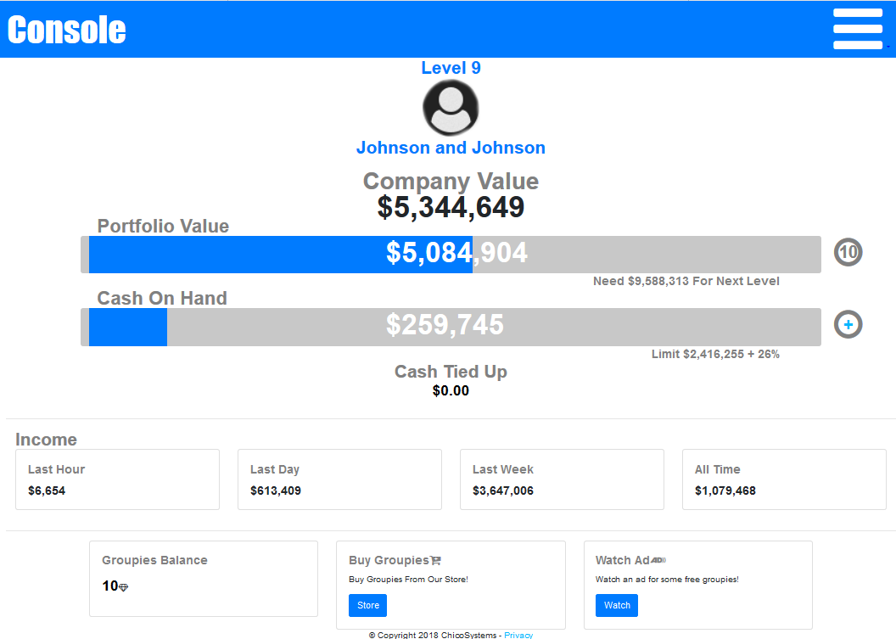

I earned my Bachelor's Deegree in Computer Science from Humboldt State University, Summa Cum Laude I'm currently working as Data Scientist/Software Engineer for several non-profits in the Eureka area. I'm currently working towards becoming a rock star. Check it out Boulevard of Broken Dreams American Tune Cocain & Abel Into The Dark and Say Something
About Me
Latest Projects
Location Idle Game
Buy and Sell Cities. Make A forture in your spare time!

New
My Location Idle Game is a geolocation game. The player travels around the country buying shares of the different cities that they visit. With their original $1000.00 they have to strategically plan on which shares of which cities to buy in order to earn money. The point of this game is to allow me to test different types of economic models for online games on a real audience. Currently the economy has a set amount of wealth in it and the game allows multiple players to compete for a share of that wealth.

Marine Applied Research & Exploration - Video Processor GUI Application
The Video Processing GUI is meant to replace the physical X-Keys keypad and solve these pain points. It will provide a touch screen interface with easy drag-and-drop reprogrammable keys. The User will be able to access multiple sheets of reprogrammable keys with a single button click, shortening the context switch time from hours into seconds.

Project PICK - Automated Identification Training
Provide a training application for various users to visually identify subjects that belong to a specific field of study. The application will strengthen the user’s ability to identify objects in their field of study accurately and quickly. Progress and incorrect answers will be documented, to allow the user to identify weak points in their knowledge, and allow them to derive clear goals in the understanding of the subject matter.
Quiz Game - Multiplayer Trivia Training Game
Quiz Game is a game I designed to help me prepare to compete in trivia competitions. Underlaying Quiz Game is a neural network that learns from the player in order to classify different types of questions. The player is given a trivia question and multiple questions to answer it. As player get questions correct, or wrong quiz game reclassifies the questions into different categories. This makes the answers to the questions more difficult to pick correctly as the player advances.
LoadUr - An Imgur Album Downloader
A program designed to download albums from Imgur.com. When Imgur was new they didn't have anyway to download albums. They also didn't have a public api, so there was no easy way to make a program to download the albums. As a result LoadUr originally helped users to download their albums by discovering every picture in their album with a custom web crawler. After the web crawler discovers the images they are placed in a download queue and displayed to the user as they are downloaded.
A Race In Space - Mobile & Desktop Game
You are a Space Man! A game where you rocket through space fighting against gravity wells that might crush you, dodging planets that my crunch you, all the while trying to defeat the ghosts of your past whom might make you cry. A Race in Space in my experiement with time travel in mobile games. In A Race in Space you don't race against other live players, you race against your opponents past lives. You may even end up racing against your own past life.
Hostmon - Latency Monitoring for ISP Support
Hostmon is a latency monitoring web app designed for ISP Support Technicians. Hostmon gives the Technician the ability to constantly monitor the network latency to hundreds of customer devices simultaneously. The Technician now has available, not only up to the minute network latency graphs for each device, but they can also view the historic latency information for monitored devices up to a year in the past.
PanicOS - A Hobby Operating System
PanicOS is a Unix-like Operating System made for learning purposes in my spare time. It is derived from multiple tutorials found on the internet including Bran's Kernel Development Tutorial, the OsDev tutorials, JamesM's Kernel Development Tutorial and The Little Book About OS Development. PanicOS Currently features a working GDT and IDT table setup. IRQ's and ISRS's are working. Protected mode is enabled. A simple keyboard and serial driver are working. A simple shell is functioning. A simple memory managment system is in place. Paging is enabled. An Initial Ramdisk is setup and working (filesystems yay!). Basic multitasking is started. IE fork() works, but execv() does not yet.
Other Projects
Explorer - A Roguelike Webgame written in Javascript Free
Explorer was a hackathon attempt to emulate a turn by turn rogue like survival web game. It went pretty well, but it is pretty hard to naturally figure out how to survive. Explorer was an exercise in NOT PLANNING AHEAD. I didn't arcitect anything in this program and just let it grow naturally over the course of an evening. As a result it has pretty ugly code, but it's good to learn from.
WeatherStation - Arduino Weather Displaying Firmware Free
WeatherStation is an arduino firmware that powers my Analog Analog Digital Weather Stations. It's a digital weather station that mimics an analog weather stations. Therefore it is an Analog Analo Digial Weather Station.
Evolution - Evolving Virtual Beings controlled by Neural Networks Free
In Evolution I aimed to create creatures in a simulated world. These creatures have brains. They are able to both Sexually and Asexually reproduce. Their brains will eveolve using a custom designed genetic algorithm. The evolution of the brains was found to cause the creatures to become more fit in their virtual world. They are able to avoid predators, find mates, live longer and reproduce. After running the Evolution program for some time we can save the brains of our creatures and have them compete against other creatures.
Work & School Experience
B.S. in Computer Science - Humboldt State University (2021)
I earned a Bachelors Degree of Science in Computer Science from Humboldt State University. Summa Cum Laude
A.S. in Quantitative Reasoning - Shasta College (2019)
Shasta College doesn't have a Computer Science program. The closest thing was their math departments Quantitative Reasoning AA degree. Therefore, I've earned an Associates of Arts in Quantitative Reasoning from Shasta College (December 2018)
Data Analyist & Software Engineer - Marine Applied Research & Exploration (2020 - 2021)
Responsible for writing software that pre-processed all of our ROV's sensors GEO data. Designed, Implemented & Managed the Company Network.
Research Assistant & Software Engineer - Humboldt State University (2019 - 2021)
Worked on the "Autograder" project, a project designed to decrease teacher load by automatically grading freshman computer science homework.
Cofounder & Lead Software Engineer - ChicoSytems (2014 - 2018)
I designed and implemented a variety of software solutions for different companies seeking integrated customer tracking software and machine configuration software. This integration software allows customer device tracking for companies that lease network based devices to end users.
Software Developer - Digital Path Inc (2011 - 2014)
Worked on a research team developing software for long range wireless routers. I specifically led the team that created the graphical user interface for end users to configure the router. We had to integrate the gui with the legacy configuration databases that tracked configuration changes throughout the company. The gui team was responsible for all device configurations. I also often helped with the device driver team creating a new linux device driver for wireless long range routers.
Cofounder & Head of I.T. - Tilt Servers (2008 - 2011)
At Tilt Servers we rented out game servers and web hosting space. I led the team that developed a proprietary game server control panel. I also contributed to the project ISPConfig3 which we used quite often in the company to provision customer web hosting. The company repackaged my Game Server Control Panel and sold it as their first software product. We decided to shut the company down when one of the founders decided to die.
My GitHub
Most of my personal projects are open source on Github. Find them here!